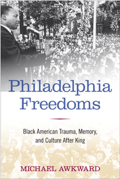

Tracing racial trauma through Philadelphia sports and cultural production in the four decades after King's assassination
Tracing racial trauma through Philadelphia sports and cultural production in the four decades after King's assassination


 Tracing racial trauma through Philadelphia sports and cultural production in the four decades after King's assassination
Tracing racial trauma through Philadelphia sports and cultural production in the four decades after King's assassination

|  |
Philadelphia FreedomsBlack American Trauma, Memory, and Culture after KingMichael Awkwardpaper EAN: 978-1-43990-709-2 (ISBN: 1-4399-0709-9) |
"Philadelphia Freedoms is a richly textured study that deftly intersects urban history, pop culture, and literary studies. The connection of trauma and race is provocative and compelling. As a fellow South Philadelphian and Penn alumnus, I was especially impressed by the autobiographical dimensions of this book."
—Gerald Early, Merle Kling Professor of Modern Letters, Washington University in St. Louis, and author of A Level Playing Field: African American Athletes and the Republic of Sports
Michael Awkward�s Philadelphia Freedoms captures the disputes over the meanings of racial politics and black identity during the post-King era in the City of Brotherly Love. Looking closely at four cultural moments, he shows how racial trauma and his native city�s history have been entwined. Awkward introduces each of these moments with poignant personal memories of the decade in focus, chronicling the representation of African American freedom and oppression from the 1960s to the 1990s.
Philadelphia Freedoms explores NBA players� psychic pain during a playoff game the day after Martin Luther King, Jr.'s assassination; themes of fatherhood and black masculinity in the soul music produced by Philadelphia International Records; class conflict in Andrea Lee�s novel Sarah Phillips; and the theme of racial healing in Oprah Winfrey�s 1997 film, Beloved.
Awkward closes his examination of racial trauma and black identity with a discussion of candidate Barack Obama�s speech on race at Philadelphia�s Constitution Center, pointing to the conflict between the nation�s ideals and the racial animus that persists even into the second term of America�s first black president.
Excerpt available at www.temple.edu/tempress
�Philadelphia Freedoms is one of the most interesting studies of race and culture I have seen. Awkward�s personal openings to each chapter add a layer of interest and perspective that we seldom find in critical studies. His approach also provides a concrete example of the workings of trauma. I doubt that the author is ever going to be offered the key to the city, but I suspect he�s OK with that. In fact the strong undertone of anger and frustration is what gives the book its energy.�
—Keith Byerman, Professor of English, Women's Studies, and African and African American Studies at Indiana State University and the author of Remembering the Past in Contemporary African American Fiction
�In Philadelphia Freedoms Michael Awkward deftly turns autobiographical reflection to the service of sociocultural critique. Seeing his hometown as a crucible for the collective trauma that distinguishes African-American subjectivity, Awkward reviews key moments in the restaging of that trauma during the last four decades of the twentieth century. In the process, he demonstrates how Du Boisian double consciousness is continually adapted in the post-Civil Rights-era United States, and suggests modes for negotiating the challenge of African-American citizenship in the new millennium.�
—Phillip Brian Harper, Remarque Professor of Literature, New York University, and author of Are We Not Men? Masculine Anxiety and the Problem of African-American Identity
"[A] searing book that captures all of the turbulent civil rights struggles that took place in the City of Brotherly Love, from the �60s to the �90s.... Awkward dives right in. He brilliantly juxtaposes Philadelphia�s mythic image as the city where American democracy was born with the real life, bitter struggles of African-Americans and their quest to obtain those democratic rights guaranteed by the Constitution signed here two centuries ago�and still being sought today."
—Philadelphia Weekly
"From its captivating personal narrative of rootedness in the 'city of brotherly love and sisterly affection,' Awkward's self-referential, scholarly treatment presages the rich dynamics constituting the intersections of blackness, race, and 'traumatized black subjectivity' he explores. A model for interdisciplinary scholarship, Philadelphia Freedoms offers a much needed examination of 'commemoration, grief, and riot preventions' across myriad venues: from the experiences of athletes like Chet Walker and performers like James Brown to cultural production, such as music and literature, that challenge black racial oppression, stereotypes of black dysfunction, and black racial trauma in the wake of King's death. Coming full circle, Awkward concludes with Barack Obama, often characterized as the manifestation of 'King's dream,' addressing the particularities of race in America and Philadelphia in efforts to create 'a more perfect union.' Summing Up: Recommended."
—CHOICE
Preface
Acknowledgments
Introduction: Keeping the Past in Lively Memory after King: The Traumatic Implications of Black American Oppression
1. �Philadelphia Did Not Burn�: Quelling Riots and Deferring Hoop Dreams in the Age of the Militant Black Athlete
2. Haunted Longings: Nostalgic Black Musical Formulations of Masculinity and the Patriarchal Family
3. A �Genuinely Afro-American Narrative�: Sarah Phillips and the Politics of Black Textual Authenticity
4. Screening the (Beloved) Novel: On Oprah Winfrey and the Protocols of Adaptation
Conclusion: No Longer at Home?
Notes
References
Index
Michael Awkward, Gayl A. Jones Professor of Afro-American Literature and Culture at the University of Michigan, is the author, most recently, of Burying Don Imus: Anatomy of a Scapegoat and Soul Covers: Rhythm and Blues Remakes and the Struggle for Artistic Identity.
African American Studies
Philadelphia Region
Cultural Studies
© 2015 Temple University. All Rights Reserved. This page: http://www.temple.edu/tempress/titles/2159_reg.html.